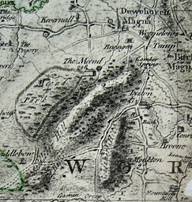

 Isaac Taylor's map of 1754. Note the tump to the north of Wormelow junction. Though it is not especially obvious in this reproduction, the Gamber stream appears to run under the words "Gamber Spring" to a spring across the road and to the north-west of the current spring position, which is to the east of the road.